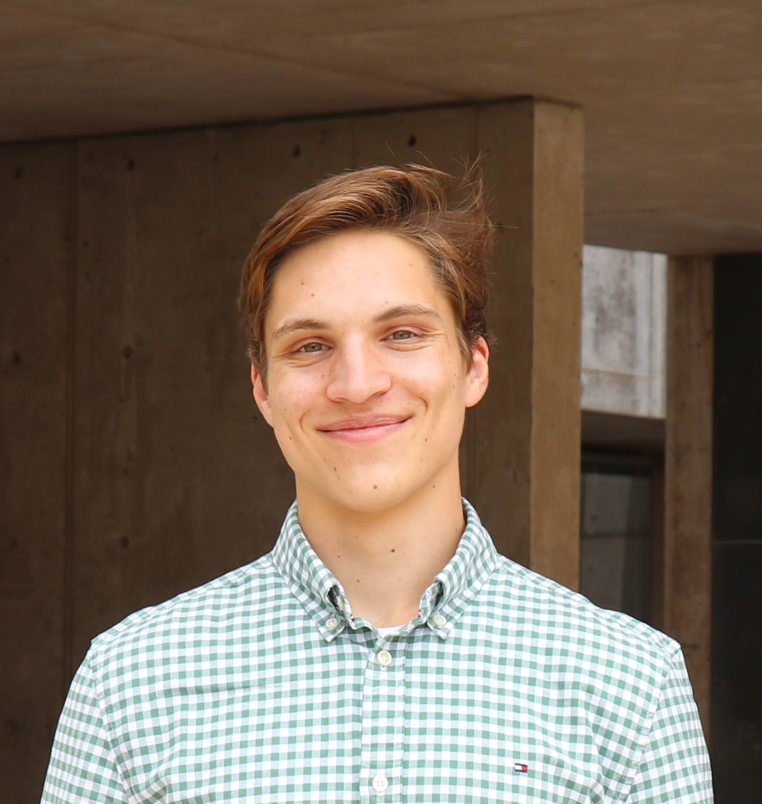

EnVision Maker Studio
Oct 2026 – PresentVolunteer · UC San Diego
- Troubleshoot fabrication machinery and assist peers with proper equipment usage for engineering and art projects
Chemical Engineering, UC San Diego · GPA 3.96
I'm studying Chemical Engineering with a minor in Business Economics at UC San Diego.

About Me
I'm Maxwell Rosen, a Chemical Engineering student at UC San Diego with a minor in Business Economics, expected graduation of June 2028. I'm drawn to the intersection of engineering, biology, and technology with hopes of designing medical devices long-term.
From September 2025 through September 2026 I worked as a Lab Intern in the Ecker Lab at the Salk Institute, where I designed and deployed Raspberry Pi–based high-throughput imaging systems to monitor plant growth across 200+ samples under variable environmental stress. I learned how to make informed decisions to improve my project while communicating with my teammates and mentor effectively. I'm also second author on our manuscript currently under review.
I also completed Microfluidic Device Research abroad at National Taiwan University, working in the Advanced Thermal Science & Flow Control Lab at the Institute of Applied Mechanics. There I helped further decrease the runtime of the lab's Automatic Western Blot device through membrane saturation research, and developed an automatic micropipetter.
Outside the lab, I stay grounded through running, hiking, great food, and science fiction entertainment. I'm always looking for the next interesting problem to solve, feel free to reach out.
Experience
Volunteer · UC San Diego
Undergraduate Research Intern · La Jolla, CA
Skills